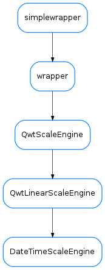

DateTimeScaleEngine¶

-
class
DateTimeScaleEngine(scaleDraw=None)[source]¶ Bases:
PyQt4.Qwt5.Qwt.QwtLinearScaleEngine-
static
disableInAxis(plot, axis, scaleDraw=None, scaleEngine=None)[source]¶ convenience method that will disable this engine in the given axis. Note that it changes the ScaleDraw as well.
Parameters: - plot (
QwtPlot) – the plot to change - axis (
Axis) – the id of the axis - scaleDraw (
QwtScaleDraw) – Scale draw to use. If None given, aFancyScaleDrawwill be set - scaleEngine (
QwtScaleEngine) – Scale draw to use. If None given, aQwt5.QwtLinearScaleEnginewill be set
- plot (
-
divideScale(x1, x2, maxMajSteps, maxMinSteps, stepSize)[source]¶ Reimplements Qwt5.QwtLinearScaleEngine.divideScale
Important: The stepSize parameter is ignored.
Return type: QwtScaleDivReturns: a scale division whose ticks are aligned with the natural time units
-
static
enableInAxis(plot, axis, scaleDraw=None, rotation=None)[source]¶ convenience method that will enable this engine in the given axis. Note that it changes the ScaleDraw as well.
Parameters: - plot (
QwtPlot) – the plot to change - axis (
Axis) – the id of the axis - scaleDraw (
QwtScaleDraw) – Scale draw to use. If None given, the current ScaleDraw for the plot will be used if possible, and aTaurusTimeScaleDrawwill be set if not - rotation (
floatorNone) – The rotation of the labels (in degrees, clockwise-positive)
- plot (
-
static